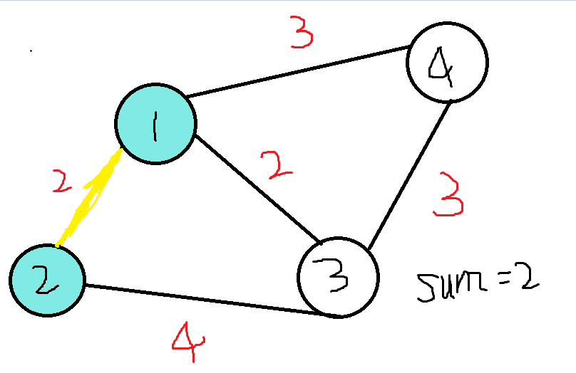

原文连接:https://www.cnblogs.com/BatmanWhoLaughs/p/10864716.html
题目描述
如题，给出一个无向图，求出最小生成树，如果该图不连通，则输出orz
输入输出格式
输入格式：
第一行包含两个整数N、M，表示该图共有N个结点和M条无向边。（N<=5000，M<=200000）
接下来M行每行包含三个整数Xi、Yi、Zi，表示有一条长度为Zi的无向边连接结点Xi、Yi
输出格式：
输出包含一个数，即最小生成树的各边的长度之和；如果该图不连通则输出orz
输入输出样例
输入样例#1：4 5 1 2 2 1 3 2 1 4 3 2 3 4 3 4 3输出样例#1：7说明
时空限制：1000ms,128M
数据规模：
对于20%的数据：N<=5，M<=20
对于40%的数据：N<=50，M<=2500
对于70%的数据：N<=500，M<=10000
对于100%的数据：N<=5000，M<=200000
分析
这是一道求最小生成树的模板题。
假设一个拥有n个节点的图，若它是个连通图，则可求其最小生成树。什么是最小生成树？先来解释一下生成树。
如果连通图 G的一个子图是一棵包含G 的所有顶点的树，则该子图称为G的生成树。
简而言之，就是通过连接一些边而使这个图的任意节点之间直接或间接地相连通。最小生成树，可以理解为连接的边的边权和最小时的生成树。一般而言，常用的求最小生成树的方法有克鲁斯卡尔Kruskal和普里姆Prim算法，在本篇中仅介绍克鲁斯卡尔算法。它的思想其实非常好理解，我们把每个点看做一个集合。
- 在一开始，设每个点各成一个集合，也就是运用并查集的思想。
- 读入边后，将边从小到大排序，运用的是贪心思想。这样可以保证最终的结果值最小。
- 我们从最小的边开始，如果这条边两端的点不在一个集合内，就把这条边连起来，再把两端的点并成一个集合。
- 当连接的边的数量是点数-1时，我们就得到我们要求的最小生成树了。
”当连接的边的数量是点数-1时“，为什么呢？若这个图中有n个点，则我们要做的是把n个集合连成一个集合，边数当然必须是n-1。多一条则会成环，少一条则无法联通。
以输入样例为例，这个图一开始就是这样的（样例似乎有些不合理，画图水平也实在不行，将就着看）：
我们对边进行排序，得到最小的边是连接1,2和1,3的两条边。这里我们先处理1,2这条边，我们知道它们此刻当然不在一个集合中，于是连接。

如上图，sum表示当前所求出的边权之和。这时该操作的就是1,3之间的连线，它们目前并不属于一个集合，所以我们把它们连起来，点1,2,3就处于一个集合中啦。
再接下来剩下三条边，权值分别为3,3,4，那么我们先处理1，4之间的这条边，很明显点4现在并不与1处于同一个集合。我们把它连起来。
这时我们发现，连接的边数为3，已经等于点数-1了，退出操作，输出结果7.观察此时的图，四个点确实都在连线中，这个图的最小生成树值为7.
这就是克鲁斯卡尔Kruskal的总体思想，非常易于理解。
代码
首先考虑如何存边，由上面的思考过程我们可以想到，我们希望可以快捷简便的获得一条边的序号、起止点和权值。二维数组显然不是理想解法，我们考虑结构体。
1 struct bia{
2 int s,t;//s表示起点，t表示终点
3 long long c;//c表示权值，使用long long或int应依数据范围决定
4 };
5 bia b[200001];如果要将结构体表示的边从小到大进行排序，直接使用sort会出问题。我们可以自己编写一个cmp函数，表示排序规则。
1 bool cmp(bia a,bia b){
2 if(a.c<b.c)
3 return 1;
4 return 0;
5 }我个人习惯一种更简洁的写法，一会会在完整程序中展现。
考虑到”把每个点看成一个集合“的并查集思想，我们当然也需要设一个数组fa[]表示每个点所属集合啦。但在这里我们只需要并查集比较常见的查询，合并可以直接用简洁的fa[u]=v来表示。
1 int find(int x){
2 if(fa[x]==x)
3 return x;
4 else
5 {
6 fa[x]=find(fa[x]);
7 return fa[x];
8 }
9 }这里同样有一种更简洁的写法。
处理完这些，我们就可以编写克鲁斯卡尔算法的主体程序了。
1 void kru(){
2 for(int i=1;i<=m;i++)//按权值从小到大的顺序对边进行操作
3 {
4 int u=find(b[i].s),v=find(b[i].t);//u和v分别表示这条边两端节点所属的集合
5 if(u==v)
6 continue;//若该边连接的两点已经处于一个集合中，则不必进行连接，直接进行下一条边
7 fa[u]=v;//将该边连接的两点进行合并
8 ans+=b[i].c;//ans即上图中的sum，表示所求的最小生成树之值
9 s++;//用s统计目前已连接的边数，若已连接n-1条边，则结束程序，输出结果
10 if(s==n-1)
11 return;
12 }
13 }这样我们就完成了克鲁斯卡尔算法，建议先通过洛谷P3366【模板】最小生成树这道题。AC代码如下。
1 #include <iostream>
2 #include <algorithm>//sort需要的头文件
3 using namespace std;
4 struct bia{
5 int s,t;//s表示起点，t表示终点
6 long long c;//c表示权值，使用long long或int应依数据范围决定
7 };
8 bool cmp(bia a,bia b){
9 return a.c<b.c;//这是一种更简洁的写法
10 }
11 bia b[200001];//用b数组存储边
12 int n,m,ans,s,fa[5001];//n为点数，m为边数，ans为答案，s为已连接边数，fa[]表示点所在的集合
13 int find(int x){
14 return x==fa[x]?x:fa[x]=find(fa[x]);//也是一种简便写法
15 }
16 void kru(){
17 for(int i=1;i<=m;i++)//从最小的边开始操作
18 {
19 int u=find(b[i].s),v=find(b[i].t);//u和v分别表示该条边两端节点所处的集合
20 if(u==v)
21 continue;//若两点属于同一集合，该边不需要连接，直接操作下一条
22 fa[u]=v;//将两点并入同一集合
23 ans+=b[i].c;//将该边边权加入答案
24 s++;//累计目前已连接边的边数，若为n-1则结束运算并输出答案
25 if(s==n-1)
26 return;
27 }
28 }
29 int main()
30 {
31 cin>>n>>m;
32 for(int i=1;i<=n;i++)
33 fa[i]=i;//初始化每个点各成一个集合
34 for(int i=1;i<=m;i++)
35 cin>>b[i].s>>b[i].t>>b[i].c;
36 sort(b+1,b+m+1,cmp);
37 kru();
38 if(s==n-1)
39 cout<<ans;
40 else
41 cout<<"orz";//实际上本题并不需要输出orz，数据中没有无解情况，但我们仍应考虑所有题目条件
42 return 0;
43 }评测结果（截图是无注释版的结果，仍可以进行快读快写之类的优化，但这个题显然并不需要）
附
值得一提的是，克鲁斯卡尔算法的时间复杂度为O(mlogn），普里姆算法的复杂度为O(n^2)，优化后可达到O(mlogn)（实际上还可进行优化，但编程复杂度也会相应提高许多）。在面对稀疏图（边数较少的图）时不妨采用克鲁斯卡尔算法，在面对稠密图（边数较多）的图时则可考虑普里姆优化算法。
完成模板题后，不如再进行几道练习题练手——都是较为简单的题目，对模板稍加改动即可。附上AC代码，复制粘贴可能被kkk制裁哦。


1 #include <iostream>
2 #include <algorithm>
3 using namespace std;
4 struct bia{
5 int s,t;
6 long long c;
7 };
8 bool cmp(bia a,bia b){
9 return a.c<b.c;
10 }
11 bia a[10001];
12 int n,k,sum,ans,s,fa[101];
13 int find(int x){
14 return x==fa[x]?x:find(fa[x]);
15 }
16 void kru(){
17 for(int i=1;i<=k;i++)
18 {
19 int u=find(a[i].s),v=find(a[i].t);
20 if(u==v)
21 continue;
22 fa[u]=v;
23 s++;
24 sum+=a[i].c;
25 if(s==n-1)
26 return;
27 }
28 }
29 int main()
30 {
31 cin>>n>>k;
32 for(int i=1;i<=n;i++)
33 fa[i]=i;
34 for(int i=1;i<=k;i++)
35 cin>>a[i].s>>a[i].t>>a[i].c,ans+=a[i].c;
36 sort(a+1,a+k+1,cmp);
37 kru();
38 ans-=sum;
39 cout<<ans;
40 return 0;
41 }
1 #include <iostream>
2 #include <algorithm>
3 using namespace std;
4 struct bia{
5 int s,t;
6 int c;
7 };
8 bool cmp(bia a,bia b){
9 return a.c<b.c;
10 }
11 bia a[100001];
12 int n,m,ans,sum,fa[301];
13 int find(int x){
14 return x==fa[x]?x:find(fa[x]);
15 }
16 void kru(){
17 for(int i=1;i<=m;i++)
18 {
19 int u=find(a[i].s),v=find(a[i].t);
20 if(u==v)
21 continue;
22 fa[u]=v;
23 sum++;
24 ans=max(ans,a[i].c);
25 if(sum==n-1)
26 return;
27 }
28 }
29 int main()
30 {
31 cin>>n>>m;
32 for(int i=1;i<=n;i++)
33 fa[i]=i;
34 for(int i=1;i<=m;i++)
35 cin>>a[i].s>>a[i].t>>a[i].c;
36 sort(a+1,a+m+1,cmp);
37 kru();
38 cout<<sum<<" "<<ans;
39 return 0;
40 }
1 #include <iostream>
2 #include <algorithm>
3 using namespace std;
4 struct bia{
5 int s,t,c,y;
6 };
7 bool cmp(bia a,bia b){
8 if(a.y!=b.y)
9 return a.y<b.y;
10 else
11 return a.c<b.c;
12 }
13 bia a[10001];
14 int n,m,sum,ans,fa[10001],j;
15 int find(int x){
16 return x==fa[x]?x:find(fa[x]);
17 }
18 void kru(){
19 for(int i=1;i<=m;i++)
20 {
21 int u=find(a[i].s),v=find(a[i].t);
22 if(a[i].y==2)
23 {
24 if(u==v)
25 continue;
26 }
27 else
28 {
29 if(u==v)
30 sum--;
31 }
32 fa[u]=v;
33 sum++;
34 ans+=a[i].c;
35 if(sum==n-1)
36 {
37 j=i;
38 return;
39 }
40 }
41 }
42 int main()
43 {
44 cin>>n>>m;
45 for(int i=1;i<=n;i++)
46 fa[i]=i;
47 for(int i=1;i<=m;i++)
48 cin>>a[i].y>>a[i].s>>a[i].t>>a[i].c;
49 sort(a+1,a+m+1,cmp);
50 kru();
51 for(int i=j;i<=n;i++)
52 if(a[i].y==1)
53 ans+=a[i].c;
54 else
55 break;
56 cout<<ans;
57 return 0;
58 }
1 #include <iostream>
2 using namespace std;
3 int fa[1000001],n,m,x1,y1,x2,y2,sum;
4 int find(int x){
5 return x==fa[x]?x:fa[x]=find(fa[x]);
6 }
7 bool unionn(int a,int b){
8 int u=find(a),v=find(b);
9 if(u!=v)
10 {
11 fa[v]=u;
12 return 1;
13 }
14 else
15 return 0;
16 }
17 int main()
18 {
19 cin>>n>>m;
20 for(int i=1;i<=n*m;i++)
21 fa[i]=i;
22 while(cin>>x1>>y1>>x2>>y2)
23 unionn((x1-1)*m+y1,(x2-1)*m+y2);
24 for(int i=1;i<=m;i++)
25 for(int j=1;j<n;j++)
26 if(unionn((j-1)*m+i,j*m+i))
27 sum++;
28 for(int i=1;i<=n;i++)
29 for(int j=1;j<m;j++)
30 if(unionn((i-1)*m+j,(i-1)*m+j+1))
31 sum+=2;
32 cout<<sum;
33 return 0;
34 }